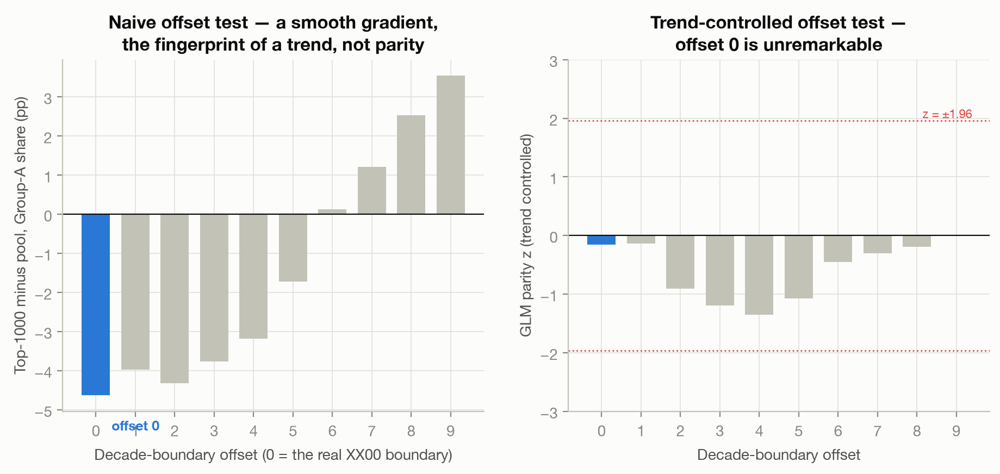
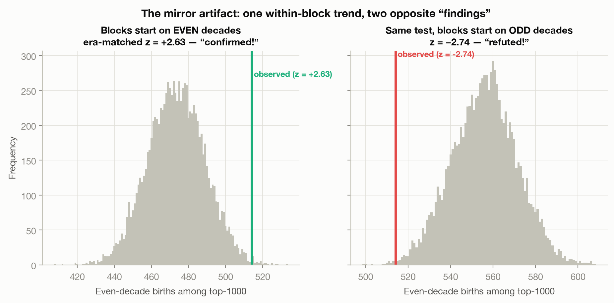
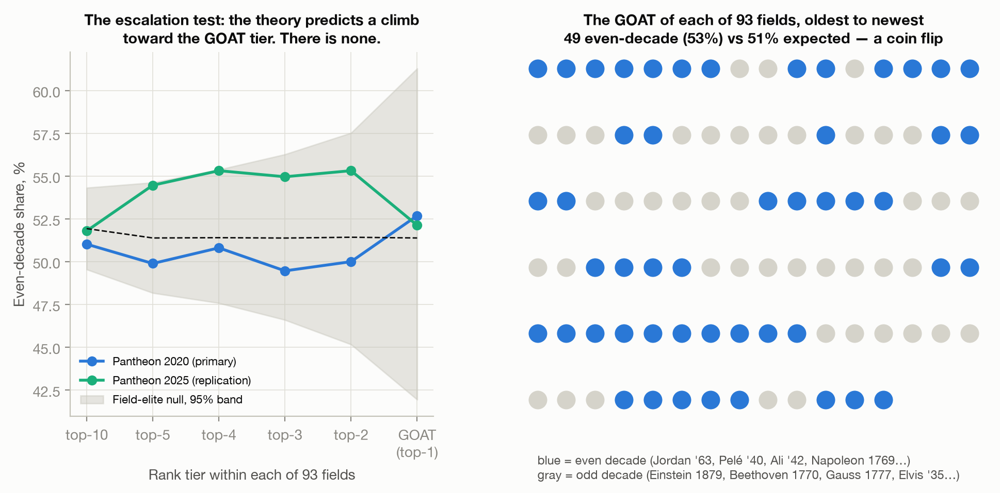
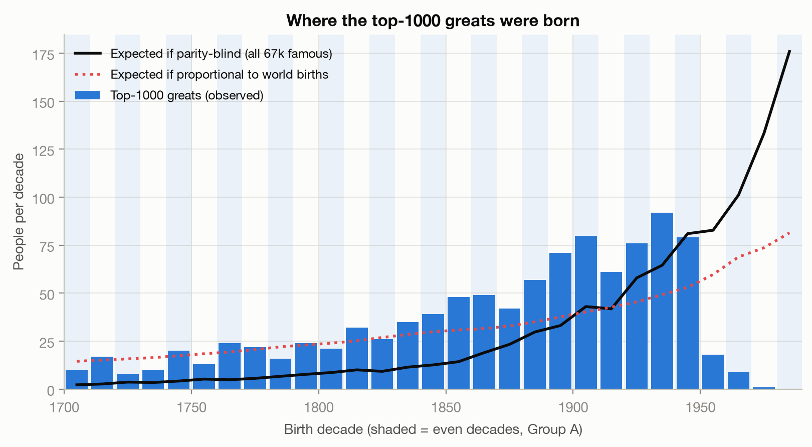
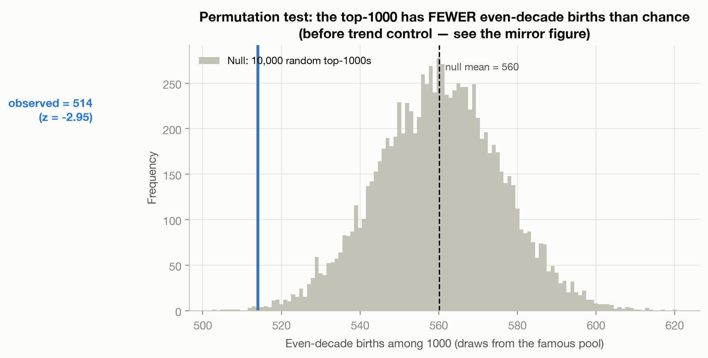
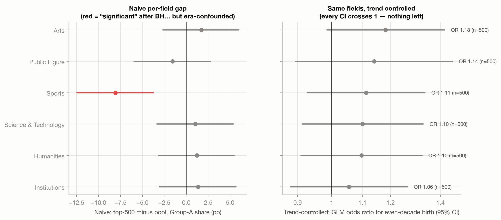
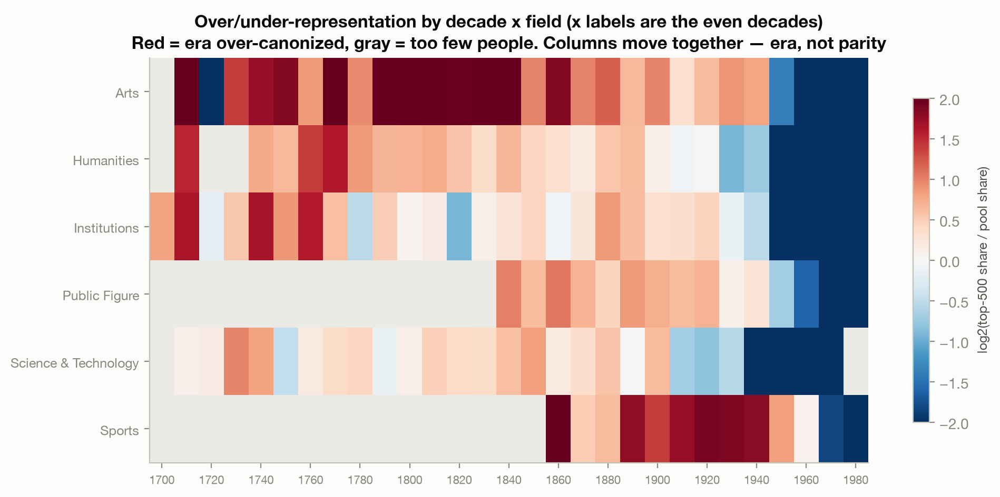
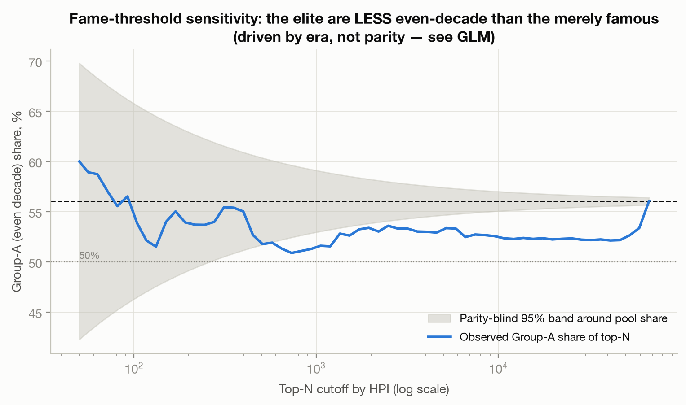
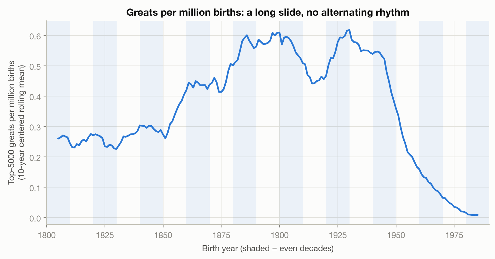

A pre-registered investigation · 165,000 records · 4 datasets
I believed the GOATs of every field are born in even decades. I tested it properly. It died twice, came back once, and taught me more than being right would have.
Being born in an even decade multiplies your odds of all-time greatness by 0.99 (95% CI 0.87–1.12). Nothing. Null in four datasets, all six fields, every century, every fame threshold, and at the GOAT tier itself: the #1 of each of 93 fields splits 49 even, 44 odd. A coin flip.
Jordan, 1963. LeBron, 1984. Bolt, 1986. Messi, 1987. Pelé, 1940. Napoleon, 1769. Newton, 1643. Call a decade even when its tens digit is even: the 40s, the 60s, the 80s. Every GOAT I could summon lived there, and the pattern seemed to sharpen as I climbed from top-10 lists toward the single greatest of each field.
The problem: roughly half of everyone is born in an even decade. Seven remembered hits is exactly what a memory that keeps confirmations and drops misses would produce from pure noise. So instead of collecting more examples, I locked the rules first: which data, which test, and what result would count as confirmation or refutation, all written down before touching a single birth year. Then I pulled 88,937 famous people from MIT's Pantheon dataset (fame-scored by Historical Popularity Index), a 125,000-person 2025 update, Wikidata, every Nobel laureate (990 prize wins), and a world birth-rate baseline so population booms couldn't fake anything.
First result, within a day: the top-1000 all-time greats are less even-decade than the other 66,000 famous people. 51.4% versus 56.0%, p = 0.003. For a moment the data said greatness avoids even decades.
The pre-registered kill-shot caught the lie. There are ten possible ways to slice years into alternating decades; only one is the real 0-to-9 decade. A genuine decade effect should make the real slicing stand out discontinuously. Instead, the "effect" slid smoothly across all ten offsets.

The trend was hiding in plain sight. All-time greats skew old (mean birth year 1870); the famous pool skews young (mean 1931), because Wikipedia is stuffed with athletes and actors born in the 1980s who will never be canonized. The 1980s is an even decade. Era was masquerading as parity.
Fine: control for era. Compare each great only against famous people born in the same 20-year window. The result flipped hard: z = +2.63, p = 0.005. Confirmed! For about an hour the Even-Decade Theory was empirically alive.
Then I ran one paranoid check. My 20-year windows started on even decades, so the even decade was always the older half of each window — and older means more canonized, even inside a 20-year block. I shifted every window by exactly ten years and re-ran the identical test.

The referee that can't be fooled by either disguise: a regression that absorbs the entire birth-year trend with a smooth curve, then asks whether any alternating even-odd signal remains on top. It doesn't. Odds ratio 0.990, dead center on nothing, and it stays null in the 2025 dataset (1.04), in Wikidata (1.06), in every one of six fields, in every half-century, and among Nobel laureates.
My own strongest objection. So: take the single most eminent person in each of 93 fields, chosen by the data, not by me. Jordan for basketball. Pelé for soccer. Ali for boxing. Einstein for physics. Beethoven for composers. Kant for philosophy. Count.

Jordan '63 Pelé '40 Ali '42 Napoleon 1769 Darwin 1809 Edison 1847 Spielberg '46 Marley '45 Kant 1724 — but — Einstein 1879 Beethoven 1770 Gauss 1777 Turing 1912 Elvis 1935 van Gogh 1853 Freud 1856 Gates 1955
This test is also immune to the era problem, because each GOAT is compared only against their own field's top-10: Jordan against LeBron and Kareem, never against Kant. And the escalation claim — top-10 → 5 → 4 → 3 → 2 → 1, getting stronger — comes out flat: 51.0%, 49.9%, 50.8%, 49.5%, 50.0%, 52.7%.
One last trap, discovered on the way to the ancient teachers. Before 500 CE, 60% of recorded birth years end in 0 (versus 9% in modern data), because ancient years are estimates rounded to round numbers — and a year ending in 0 always lands in an even decade. Ancient data fakes evidence for the theory mechanically. Where years are reliable, the apex ancients split like coins: Muhammad, Jesus, Aristotle, Plato, the Buddha odd; Confucius, Moses, Luther even.
Greats really do cluster in time — just by era, not by decade digit. Whole generations get over-canonized together in long waves: the 1940s cohort (Ali, Marley, Merckx, Spielberg), the 1980s football generation. Some legendary clusters happen to sit in even decades, and a pattern-hungry mind promotes a cluster into a law. Meanwhile memory quietly drops Einstein, Babe Ruth, Kobe, and Brady.
| Where the theory could have shown up | Result |
|---|---|
| Top-1000 of all humanity, trend-controlled | OR 0.99 — null |
| Every one of 10 decade boundaries | offset 0 unremarkable |
| Six fields, from sports to science | all CIs cross 1 |
| 990 Nobel prize wins | 52.4% vs 53.4% expected |
| The #1 GOAT of 93 fields | 49 even / 44 odd |
| Escalation toward the top | flat |
The bigger lesson is the mirror: the same dataset handed me a significant result in both directions before it told the truth. If I had stopped at either point, I would have written a confident, chart-filled, wrong blog post. The pre-registered offset test saved me twice. The theory was fun. The autopsy was better.






Reproduce everything from raw downloads to every figure:
python run.py · data: MIT Pantheon 2.0 (2020 + 2025), Wikidata,
Nobel Prize API, UN/HYDE world births · pre-registration, decision log, full
methods and all robustness checks:
github.com/Sakshyam-Patro/even-decade-theory
· full report: REPORT.md